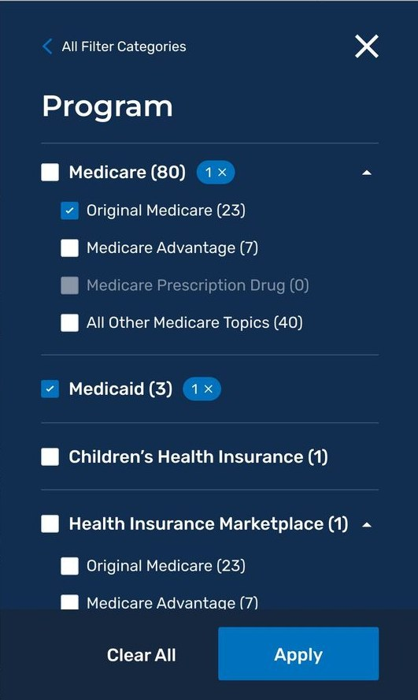
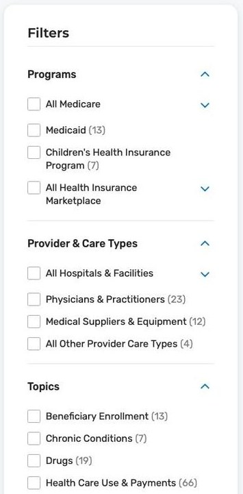
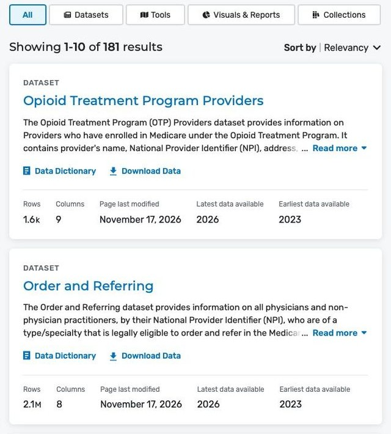
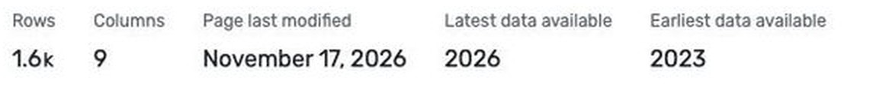
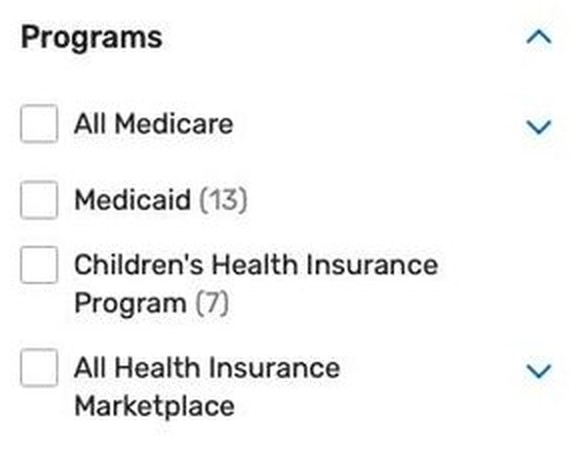
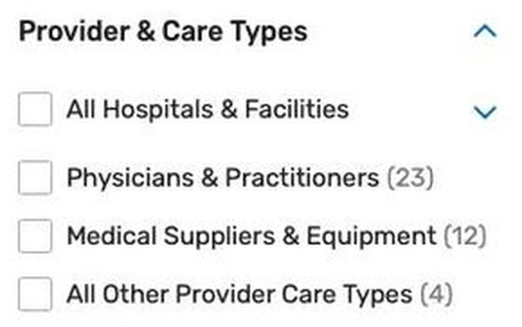
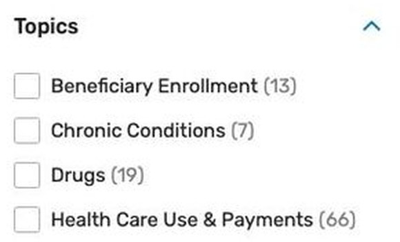

I moved search filters out of a drawer that hid the results and put them beside the results. Filtered search went from 50 to 200 page views a day to peaks near 900.
Role
Sr. Experience Designer, led design
Client
Centers for Medicare & Medicaid Services, via ICF
Method
AI-built, Figma Make prototypes tested with users
Launched
October 21
~4.5xfiltered search usage after launch
~900/daypeak filtered search page views, up from 50 to 200
Oct 21redesigned search went live
Filtered search page views per day. Hover or use the arrow keys to explore. Values are read from the analytics chart, so they are approximate.
Overview
Data.CMS.gov is the public front door to CMS data, with hundreds of datasets used by providers, researchers, and policymakers. Search is where people start, and filtering it was hard.
I led my team in using AI and Figma Make to build realistic front end prototypes that replicate the live site. Clients and users reviewed something that behaved like the real product, and the redesigned search page launched on October 21.
The Problem
On the previous search page, filters lived in a slide-out drawer that covered the results. People had to open it, work through nested categories, and apply their choices before the results changed. Filtered search stayed low, at about 50 to 200 page views a day.

The previous filter design: filters hidden in a drawer that dims the results.
The Approach
I led the design with a focus on realism, so feedback reflected how the real site would feel.
Used AI to build front end prototypes that replicate the real Data.CMS.gov site.
Prototyped in Figma Make and tested with users before development began.
Updated the prototype between research sessions based on feedback.
Handed the validated design to development and published it on October 21.
The Solution
Filters now sit beside the results and are visible on arrival. Programs, provider and care types, topics, and geography are all exposed, with result counts next to each option.
A single search field leads the page.

Filters stay visible, with result counts beside every option.

Results show rows, columns, and data freshness at a glance.
Up close
The small parts of the page do the heavy lifting. Here is what each one does and why it matters.
Content type chips
What it is. One row of chips above the results: All, Datasets, Tools, Visuals & Reports, and Collections.
Why it matters. People arrive knowing what they need, not what CMS calls it. One tap narrows a mixed list to the kind of thing they want, so a dataset search is not buried under tools and reports.
Live result count and sort
What it is. “Showing 1–10 of 181 results” with a sort control.
Why it matters. Every filter change visibly changes the number, so people see their choice working and know when they have narrowed enough.

Data facts on every result
What it is. Rows, columns, last modified, and the earliest and latest data available, right on the card.
Why it matters. Researchers can judge size and freshness before opening anything, which saves clicks and builds trust in the data.

Programs
The broadest question first: Medicare, Medicaid, CHIP, or the Marketplace. Counts show where results exist, so no one clicks into an empty set.

Provider and care types
Matches how providers describe their work, so a physician or a supplier finds their own corner of the data fast.

Topics
Lets people start from a subject, such as chronic conditions or drugs, when they do not know which dataset they need.
The Impact
Before: about 50 to 200 filtered search page views per day.
After: several hundred per day, with peaks near 900, up to about 4.5x the old high.
Overview
Data.CMS.gov is a platform with hundreds of datasets, tools, and updates used by providers, researchers, and policymakers. A key challenge was that users had no clear way to discover the latest updates. This led to confusion, missed changes, and additional support needs.
My task was to design a “What’s New” section to highlight important updates and product releases in a way that was clear, scannable, and accessible.
The Problem
How do you keep users informed on a platform where updates are constant, technical, and sometimes overwhelming, without disrupting their primary task of exploring data?
“We shouldn’t have to hunt to know what’s changed transparency is key.”
-Client
The Approach
I led the end-to-end design of the feature, focusing on clarity, scalability, and alignment with federal accessibility standards.
Researched how other large data/product platforms surface updates (e.g., GitHub, SaaS dashboards, news feeds).
Prioritized clarity and scannability so users could see what’s new at a glance.
Balanced breadth and depth: providing both quick highlights and expandable detail views.
Designed with accessibility and consistency to ensure adoption within the federal design system.
The Solution
The final design introduces a two-part experience:
Spotlight Card: visually highlights major updates such as redesigns or new datasets.
Expandable List: organizes updates by type (data, subtopic, product), with the ability to drill down for details.
Filters & View All: allow power users to navigate across multiple categories quickly.
This balance ensures casual visitors and advanced users alike can stay current without friction.
“This feature immediately made the site feel more transparent and trustworthy.”
-Client
The Impact
Improved user confidence in finding the latest data updates.
Reduced support requests related to “what’s changed.”
Reduced user confusion by surfacing updates proactively.
Provided CMS with a scalable way to highlight announcements without disrupting the core data flow.
Strengthened trust and transparency by aligning with digital service best practices.
“The What’s New section gave us a consistent way to highlight updates without adding friction. It’s a small feature that made a big difference.”